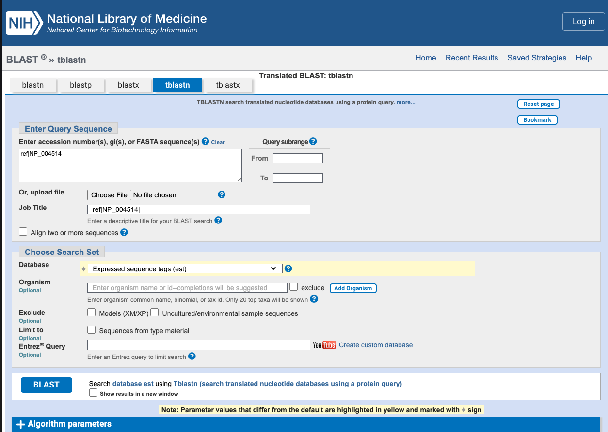
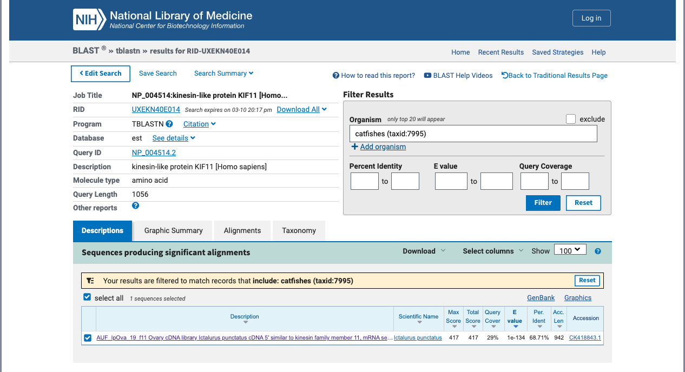
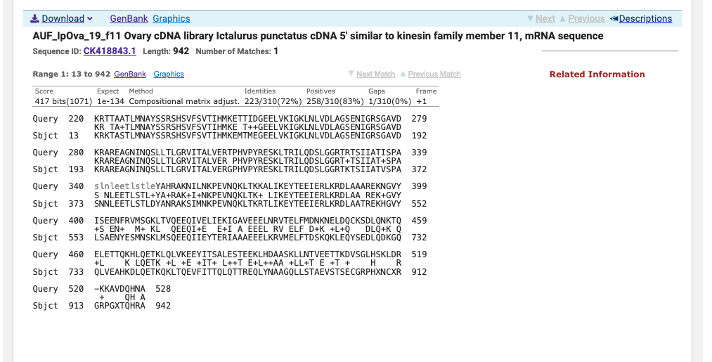
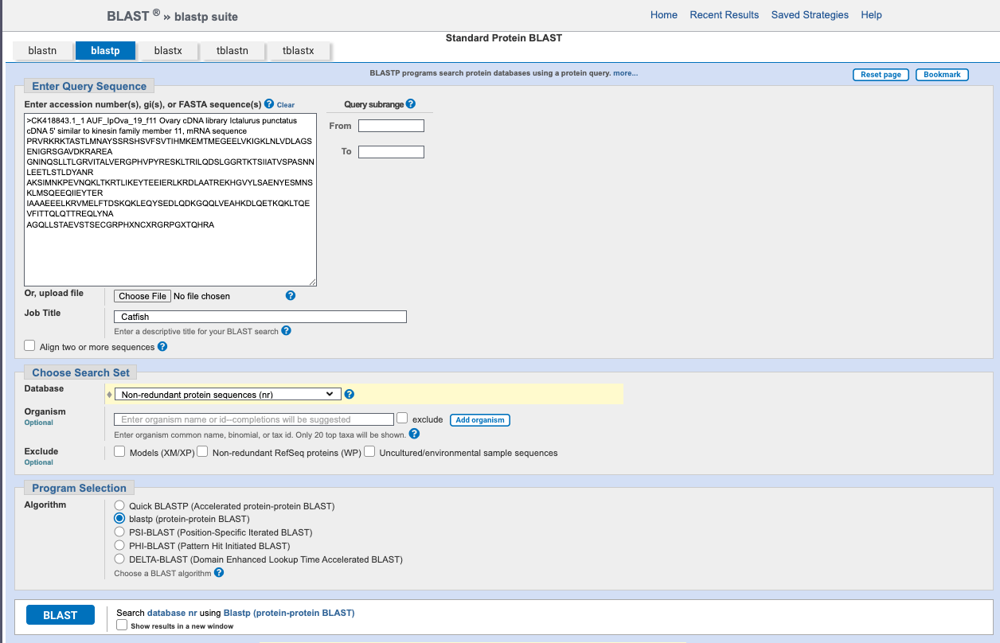
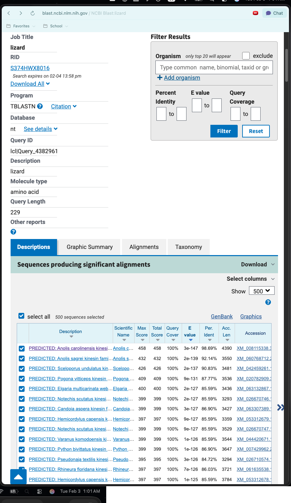

Find A Gene Project
1 Part 1:
1.1 Q1.
Tell me the name of a protein you are interested in. Include the species, accession number and known function. This can be a human protein or a protein from any other species as long as it’s function is known.
Name: Kinesin Family Number 11 (KIF11)
Accession: NP_004514
Species: Homo Sapiens
Function: A motor protein required for the establishment of a bipolar mitotic spindle, thus facilitating chromosome congression during mitosis.
1.2 Q2.
Perform a BLAST search against a DNA database, such as a database consisting of genomic DNA or ESTs. The BLAST server can be at NCBI or elsewhere. Include details of the BLAST method used, database searched and any limits applied (e.g. Organism).
Method: tblastn search against ESTS
Database: Expressed Sequence Tags (est)
Chosen Match: Accession FG708023.1, a 740 base pair expressed sequence tag (EST) from an Anolis carolinensis embryo cDNA library. Alignment details are shown below.


1.3 Q3.
Gather information about this “novel” protein. At a minimum, show me the protein sequence of the “novel” protein as displayed in your BLAST results from [Q2] as FASTA format (you can copy and paste the aligned sequence subject lines from your BLAST result page if necessary) or translate your novel DNA sequence using a tool called EMBOSS Transeq at the EBI. Don’t forget to translate all six reading frames; the ORF (open reading frame) is likely to be the longest sequence without a stop codon. It may not start with a methionine if you don’t have the complete coding region. Make sure the sequence you provide includes a header/subject line and is in traditional FASTA format.
Chosen Sequence:
Ictalurus Punctatus PRVRKRKTASTLMNAYSSRSHSVFSVTIHMKEMTMEGEELVKIGKLNLVDLAGSENIGRS GAVDKRAREAGNINQSLLTLGRVITALVERGPHVPYRESKLTRILQDSLGGRTKTSIIAT VSPASNNLEETLSTLDYANRAKSIMNKPEVNQKLTKRTLIKEYTEEIERLKRDLAATREK HGVYLSAENYESMNSKLMSQEEQIIEYTERIAAAEEELKRVMELFTDSKQKLEQYSEDLQ DKGQQLVEAHKDLQETKQKLTQEVFITTQLQTTREQLYNAAGQLLSTAEVSTSECGRPHX NCXRGRPGXTQHRA
Name: Putatative KF11-like Protein
Species: Ictalurus Punctatus
1.4 Q4.
Prove that this gene, and its corresponding protein, are novel. For the purposes of this project, “novel” is defined as follows. Take the protein sequence (your answer to [Q3]), and use it as a query in a blastp search of the nr database at NCBI.
A blastp search with a nr database yielded a top hit result is to an Anolis Crolinesis protein with <100% percent identity. See attached screenshots for top hits and selected alignment details.


1.5 Q5.
Generate a multiple sequence alignment with your novel protein, your original query protein, and a group of other members of this family from different species. A typical number of proteins to use in a multiple sequence alignment for this assignment purpose is a minimum of 5 and a maximum of 20 - although the exact number is up to you. Include the multiple sequence alignment in your report. Use Courier font with a size appropriate to fit page width.
Re-labeled sequences for alignment
Catfish Novel
PRVRKRKTASTLMNAYSSRSHSVFSVTIHMKEMTMEGEELVKIGKLNLVDLAGSENIGRS GAVDKRAREAGNINQSLLTLGRVITALVERGPHVPYRESKLTRILQDSLGGRTKTSIIAT VSPASNNLEETLSTLDYANRAKSIMNKPEVNQKLTKRTLIKEYTEEIERLKRDLAATREK HGVYLSAENYESMNSKLMSQEEQIIEYTERIAAAEEELKRVMELFTDSKQKLEQYSEDLQ DKGQQLVEAHKDLQETKQKLTQEVFITTQLQTTREQLYNAAGQLLSTAEVSTSECGRPHX NCXRGRPGXTQHRA
Human KIF11
MASQPNSSAKKKEEKGKNIQVVVRCRPFNLAERKASAHSIVECDPVRKEVSVRTGGLADKSSRKTYTFDM VFGASTKQIDVYRSVVCPILDEVIMGYNCTIFAYGQTGTGKTFTMEGERSPNEEYTWEEDPLAGIIPRTL HQIFEKLTDNGTEFSVKVSLLEIYNEELFDLLNPSSDVSERLQMFDDPRNKRGVIIKGLEEITVHNKDEV YQILEKGAAKRTTAATLMNAYSSRSHSVFSVTIHMKETTIDGEELVKIGKLNLVDLAGSENIGRSGAVDK RAREAGNINQSLLTLGRVITALVERTPHVPYRESKLTRILQDSLGGRTRTSIIATISPASLNLEETLSTL EYAHRAKNILNKPEVNQKLTKKALIKEYTEEIERLKRDLAAAREKNGVYISEENFRVMSGKLTVQEEQIV ELIEKIGAVEEELNRVTELFMDNKNELDQCKSDLQNKTQELETTQKHLQETKLQLVKEEYITSALESTEE KLHDAASKLLNTVEETTKDVSGLHSKLDRKKAVDQHNAEAQDIFGKNLNSLFNNMEELIKDGSSKQKAML EVHKTLFGNLLSSSVSALDTITTVALGSLTSIPENVSTHVSQIFNMILKEQSLAAESKTVLQELINVLKT DLLSSLEMILSPTVVSILKINSQLKHIFKTSLTVADKIEDQKKELDGFLSILCNNLHELQENTICSLVES QKQCGNLTEDLKTIKQTHSQELCKLMNLWTERFCALEEKCENIQKPLSSVQENIQQKSKDIVNKMTFHSQ KFCADSDGFSQELRNFNQEGTKLVEESVKHSDKLNGNLEKISQETEQRCESLNTRTVYFSEQWVSSLNER EQELHNLLEVVSQCCEASSSDITEKSDGRKAAHEKQHNIFLDQMTIDEDKLIAQNLELNETIKIGLTKLN CFLEQDLKLDIPTGTTPQRKSYLYPSTLVRTEPREHLLDQLKRKQPELLMMLNCSENNKEETIPDVDVEE AVLGQYTEEPLSQEPSVDAGVDCSSIGGVPFFQHKKSHGKDKENRGINTLERSKVEETTEHLVTKSRLPL RAQINL
Mouse KIF11
MASQPSSLKKKEEKGRNIQVVVRCRPFNLAERKANAHSVVECDHARKEVSVRTAGLTDKTSKKTYTFDMV FGASTKQIDVYRSVVCPILDEVIMGYNCTIFAYGQTGTGKTFTMEGERSPNEVYTWEEDPLAGIIPRTLH QIFEKLTDNGTEFSVKVSLLEIYNEELFDLLSPSSDVSERLQMFDDPRNKRGVIIKGLEEITVHNKDEVY QILEKGAAKRTTAATLMNAYSSRSHSVFSVTIHMKETTIDGEELVKIGKLNLVDLAGSENIGRSGAVDKR AREAGNINQSLLTLGRVITALVERTPHIPYRESKLTRILQDSLGGRTRTSIIATISPASFNLEETLSTLE YAHRAKNIMNKPEVNQKLTKKALIKEYTEEIERLKRDLAAAREKNGVYISEESFRAMNGKVTVQEEQIVE LVEKIAVLEEELSKATELFMDSKNELDQCKSDLQTKTQELETTQKHLQETKLQLVKEEYVSSALERTEKT LHDTASKLLNTVKETTRAVSGLHSKLDRKRAIDEHNAEAQESFGKNLNSLFNNMEELIKDGSAKQKAMLD VHKTLFGNLMSSSVSALDTITTTALESLVSIPENVSARVSQISDMILEEQSLAAQSKSVLQGLIDELVTD LFTSLKTIVAPSVVSILNINKQLQHIFRASSTVAEKVEDQKREIDSFLSILCNNLHELRENTVSSLVESQ KLCGDLTEDLKTIKETHSQELCQLSSSWAERFCALEKKYENIQKPLNSIQENTELRSTDIINKTTVHSKK ILAESDGLLQELRHFNQEGTQLVEESVGHCSSLNSNLETVSQEITQKCGTLNTSTVHFSDQWASCLSKRK EELENLMEFVNGCCKASSSEITKKVREQSAAVANQHSSFVAQMTSDEESCKAGSLELDKTIKTGLTKLNC FLKQDLKLDIPTGMTPERKKYLYPTTLVRTEPREQLLDQLQKKQPPMMLNSSEASKETSQDMDEEREALE QCTEELVSPETTEHPSADCSSSRGLPFFQRKKPHGKDKENRGLNPVEKYKVEEASDLSISKSRLPLHTSI NL
Channel Catfish KIF11 Full
MSNLIPTTKKDEKGRNIQVVVRCRPFNAVERKSNAYGVVDCDSNRKEVTVRTGSANDKTAKKMYTFDMVF GPSAKQIDVYRSVVYPILDEVIMGYNCTIFAYGQTGTGKTFTMEGERSPNEEFTWEEDPLAGVIPRTLHQ IFEKLTSNGTEFSVKVSLLEIYNEELFDLLSPSADVSERLQLFDDPRNKRGVIVKGLEEITVHNKNEVYQ ILERGAAKRKTASTLMNAYSSRSHSVFSVTIHMKEMTMEGEELVKIGKLNLVDLAGSENIGRSGAVDKRA REAGNINQSLLTLGRVITALVERGPHVPYRESKLTRILQDSLGGRTKTSIIATVSPASNNLEETLSTLDY ANRAKSIMNKPEVNQKLTKRTLIKEYTEEIERLKRDLAATREKHGVYLSAENYESMNSKLMSQEEQIIEY TERIAAAEEELKRVMELFTDSKQKLEQYSEDLQDKGQQLVEAHKDLQETKQKLTQEVFITTQLQTTESQL YNAAGQLLSTAEVSTSDVGGLHAKLQRVKAVEQHNTAAQSNFAQSMEQNCSSMQSALQEHSLKHAAMLDH YRHATAELLGGTGRVFEEAVGSVLRSYSAVREAVEEGVDGCKAKLLLQEELTKESRDAMLQMLEEHKLHL EEVLIAKAMPAIGSIMAVNEGLKQTLQRYNVLDGQMVGMKAEMTAFFSGHMAVLASMRETAVQGFTSLQA EHHKLKGQMDQANRQHKTRVAQLLQCVQDQMNLLALDTQSDFKELQEASDAQGALLETLKNTVQSQCTEA EQESSSVGARLSSCTDGVMKEMSGVAEEGRMTLEEGAGYCSLLQSSLESLAESSLQWCHAARDLTERRAK EQLTLAEENKATVHKLLKHVEERGQAAVEECRTRLAPVQQEMEVLLKRVEVQTGEDQAVLQQHREELSTL AAQALDTVNHFLSNELQQDLPTGTTPKRKEYMYPRVLVPLRSRTELEEEFRAQQEELMSVLGQCEVLMEG EEEEKPVDQDSLEDDVCSSSDSNSTQQSMSDENLMCYEEGRVPFFKKKSKKENFSSKSLNRSKVAENETS VTPPRSRLPLRTQNQ
Blue Catfish KIF11
MSNLIPTTKKDEKGRNIQVVVRCRPFNAVERKSNAYGVVDCDSNRKEVTVRTGSANDKTGRKMYTFDMVF GPSAKQIDVYRSVVYPILDEVIMGYNCTIFAYGQTGTGKTFTMEGERSPNEEFTWEEDPLAGVIPRTLHQ IFEKLTSNGTEFSVKVSLLEIYNEELFDLLSPSADVSERLQLFDDPRNKRGVIVKGLEEITVHNKNEVYQ ILERGAAKRKTASTLMNAYSSRSHSVFSVTIHMKEMTMEGEELVKIGKLNLVDLAGSENIGRSGAVDKRA REAGNINQSLLTLGRVITALVERGPHVPYRESKLTRILQDSLGGRTKTSIIATVSPASNNLEETLSTLDY ANRAKSIMNKPEVNQKLTKRTLIKEYTEEIERLKRDLAATREKHGVYLSAENYESMNSKLMSQEEQIIEY TERIAAAEEELKRVMELFTDSKQKLEQYSEDLQDKGQQLEEAHKDLQETKQKLTQEVFITTQLQTTESQL YNAAGQLLSTAEVSTSDVGGLHAKLQRVQAVEQHNAAAQGNFAQSMEQNCSSMQSALQEHNLKHAAMLDH YRHSTAELLGGTGRVFEEAVGSVLRSYGAVREAVEEGVDGCKAKLLQQEELTKESRDAMLQMLEEHKLHL EDVLIAKAMPAIGSIMAVNEGLKQTLQRYNVLDGQMVGMKAEMTAFFSGHMAALASMRETAVQGFTSLQA EHHKLKGQMDQANRQHKTRVAQLLQCVQDQMNLLALDTQSDFKELQEASDAQGALLETLKNTVQSQCTEA EQESLSVGARLSSCTDGVMKEMSGVAEEGRVALEEGAGYCSLLQSSLESLAESSLQWCHAARDLTERRAK EQLTLAEENKATVHELLKRVEERGQAAVEECRTRLAPVQQEMEVLLKGVEVQTGEDQAVLQQHREELSTL AAQALDTVNHFLSNELQQDLPTGTTPKRKEYMYPRVLVPLRSRTELEEEFRAQQEELMSVLGQCEVLMEG EEEEKPVDQDSLEDDVCSSSDSNSTQQSMSDENLMCYEEGRVPFFKKKSKKENFSSKSLNRSKVAENETS VTPPRSRLPLRTQNQ
Zebrafish KIF11
MASSQVPAAKKDEKGRNIQVVVRCRPFNTVERKSGSHTVVECDQNRKEVIMRTGGATDKAARKTYTFDMV FGPSAKQIEVYRSVVCPILDEVIMGYNCTIFAYGQTGTGKTFTMEGDRSPNEEFTWEEDPLAGIIPRTLH QIFEKLSNNGTEFSVKVSLLEIYNEELFDLLSPAPDVTERLQLFDDPRNKRGVTIKGLEEITVHNKNEVY QILERGAAKRKTASTLMNAYSSRSHSVFSVTIHMKEITLDGEELVKIGKLNLVDLAGSENIGRSGAVDKR AREAGNINQSLLTLGRVIKALVERGPHVPYRESKLTRILQDSLGGRTKTSIIATVSPASINLEETLSTLD YANRAKSIMNKPEVNQKLTKRTLIKEYTEEIERLKRDLAATRDKHGVYLSVDNYETLNGKIVSQEEQITE YTERIAAMEDELKKIIDLFTDSKQKLEQCTEDLQDKNQRLEEAHKDLSETRHRLNQEEFISTQLQTNESH LYNTADQLLSTAEASTQDVGGLHAKLQRKKDVELHNSKVQESFSQCMENCYNSMQTSLKEQSQKHAAMID YYRSSVGELLNTNGKVFKETLGAVCESYSSIKGAVGEGVERCKEQVLNQEKLSQDAQNSILEILDEHKQH LEEVLVAQAVPGIRSVMSMNDNLKQTLHKYHNLAEQMQGVKADMMTFFDAYTESLASMRECALQGFNTLR AEHDKLKQQISQAGNSHQVRVAELVQCLQNQMNLLAVDTQNDFEGLSQAASAQIPPLETLQSSIESKCTV AEEQAVSVRARLGSSVHGVISEMNSVTKEGERALEECAGYCGHLQTSLDSLAESGLKWCDEAKGLTESKA QEQLKLIRQTDTAVQDLLKSVEEKSEKAVQDCEARLGQMQQEMEATLGCVEMQTSKDEATLQEHRETLSS INTQALDTVHNFISSELRQDLPTGTTPQRKEYMYPRVLSRPRSREELEEEFRAQQEQLQSELKPCEIVME VEEEKPVDQESLEDDVSVSSDGNNTEQSCSDENLICYENGRIPFFKKKSKKENGSKSLNRSKVENDSMST PPRSKLPLRCQN
Black Bullhead Catfish KIF11
MSNLIPTTKKDEKGRNIQVVVRCRPFNAVERKSNAYGVVDCDSNRKEVTVRTGSTNDKTARKMYTFDMVF GPSAKQIEVYRSVVYPILDEVIMGYNCTIFAYGQTGTGKTFTMEGERSPNEEFTWEEDPLAGVIPRTLHQ IFEKLTSNGTEFSVKVSLLEIYNEELFDLLSPSADVSERLQLFDDPRNKRGVIVKGLEEITVHNKNEVYQ ILERGAAKRKTASTLMNAYSSRSHSVFSVTIHMKEMTMEGEELVKIGKLNLVDLAGSENIGRSGAVDKRA REAGNINQSLLTLGRVITALVERGPHVPYRESKLTRILQDSLGGRTKTSIIATVSPASNNLEETMSTLDY ANRAKSIMNKPEVNQKLTKRTLIKEYTEEIERLKRDLAATREKHGVYLSAENYESMNSKLMSQEEQILEY TERIAAAEEDLKRVMELFTDSKQKLEQYSEDLQDKGQQLEEAHKDLQETKQKLTQEVFITTQLQTTESQL YNAAGQLLSTAEVSTSDVGGLHAKLQRVQAVEQHNVAAQTNFAQSMEQNCSSMRSALQEHSVKHAAMLDH YRHATAALLGGTGRVFEEAVGSVLRSYGAVREAVEEGVDGCKAKLLQQEELTKESRDAMLRMLDEHKLHL EDALIAKAMPAIGSMMAVNEGLKQTLQRYHVLDGQMVGMKAEMTAFFSGHMAALASMRETVVQGFASLQA EHHKLKAQMDQANRQHKTRVAQLLQCVQDQMNLLALDTQSDFKELQEASDAQGALLETLKNTMQSKCTEA EQESSSVGARLSSCTDGVIKEMSGVAEEGRAALEEGAGYCSLLQRSLESLADSSLQWCHAARDLTERRAE EQLTLAEENKATVDELLKRVEERGQAAVDECRTRLAPVQQEMEVLLKGVEVQTGEDQAVLQQHRDELSTL TAQALDTVNHFLSNELQQDLPTGTTPKRKEYTYPRVLVPLRSRTELEEEFKAQQEELMSVLGQCEVLMEG EEEKPVDQDSLEDDVCSSSDSNSTQQSISDENLMCYEEGRVPFFKKKSKKENFSSKSLNRSKVAENETSV TPPRSRLPLRSQNQ
1.5.1 Alignment
CLUSTAL multiple sequence alignment by MUSCLE (3.8)
Zebrafish RLQLFDDPRNKRGVTIKGLEEITVHNKNEVYQILERGAAKRKTASTLMNAYSSRSHSVFS Catfish_Novel ——-PRVR—————————-KRKTASTLMNAYSSRSHSVFS Black_Bullhead_Catfish RLQLFDDPRNKRGVIVKGLEEITVHNKNEVYQILERGAAKRKTASTLMNAYSSRSHSVFS Channel_Catfish RLQLFDDPRNKRGVIVKGLEEITVHNKNEVYQILERGAAKRKTASTLMNAYSSRSHSVFS Blue_Catfish RLQLFDDPRNKRGVIVKGLEEITVHNKNEVYQILERGAAKRKTASTLMNAYSSRSHSVFS Human RLQMFDDPRNKRGVIIKGLEEITVHNKDEVYQILEKGAAKRTTAATLMNAYSSRSHSVFS Mouse RLQMFDDPRNKRGVIIKGLEEITVHNKDEVYQILEKGAAKRTTAATLMNAYSSRSHSVFS ** . .:***************
Zebrafish VTIHMKEITLDGEELVKIGKLNLVDLAGSENIGRSGAVDKRAREAGNINQSLLTLGRVIK Catfish_Novel VTIHMKEMTMEGEELVKIGKLNLVDLAGSENIGRSGAVDKRAREAGNINQSLLTLGRVIT Black_Bullhead_Catfish VTIHMKEMTMEGEELVKIGKLNLVDLAGSENIGRSGAVDKRAREAGNINQSLLTLGRVIT Channel_Catfish VTIHMKEMTMEGEELVKIGKLNLVDLAGSENIGRSGAVDKRAREAGNINQSLLTLGRVIT Blue_Catfish VTIHMKEMTMEGEELVKIGKLNLVDLAGSENIGRSGAVDKRAREAGNINQSLLTLGRVIT Human VTIHMKETTIDGEELVKIGKLNLVDLAGSENIGRSGAVDKRAREAGNINQSLLTLGRVIT Mouse VTIHMKETTIDGEELVKIGKLNLVDLAGSENIGRSGAVDKRAREAGNINQSLLTLGRVIT ******* ::***********************************************.
Zebrafish ALVERGPHVPYRESKLTRILQDSLGGRTKTSIIATVSPASINLEETLSTLDYANRAKSIM Catfish_Novel ALVERGPHVPYRESKLTRILQDSLGGRTKTSIIATVSPASNNLEETLSTLDYANRAKSIM Black_Bullhead_Catfish ALVERGPHVPYRESKLTRILQDSLGGRTKTSIIATVSPASNNLEETMSTLDYANRAKSIM Channel_Catfish ALVERGPHVPYRESKLTRILQDSLGGRTKTSIIATVSPASNNLEETLSTLDYANRAKSIM Blue_Catfish ALVERGPHVPYRESKLTRILQDSLGGRTKTSIIATVSPASNNLEETLSTLDYANRAKSIM Human ALVERTPHVPYRESKLTRILQDSLGGRTRTSIIATISPASLNLEETLSTLEYAHRAKNIL Mouse ALVERTPHIPYRESKLTRILQDSLGGRTRTSIIATISPASFNLEETLSTLEYAHRAKNIM ***** :*****************.******:**** *****:::**.*:
Zebrafish NKPEVNQKLTKRTLIKEYTEEIERLKRDLAATRDKHGVYLSVDNYETLNGKIVSQEEQIT Catfish_Novel NKPEVNQKLTKRTLIKEYTEEIERLKRDLAATREKHGVYLSAENYESMNSKLMSQEEQII Black_Bullhead_Catfish NKPEVNQKLTKRTLIKEYTEEIERLKRDLAATREKHGVYLSAENYESMNSKLMSQEEQIL Channel_Catfish NKPEVNQKLTKRTLIKEYTEEIERLKRDLAATREKHGVYLSAENYESMNSKLMSQEEQII Blue_Catfish NKPEVNQKLTKRTLIKEYTEEIERLKRDLAATREKHGVYLSAENYESMNSKLMSQEEQII Human NKPEVNQKLTKKALIKEYTEEIERLKRDLAAAREKNGVYISEENFRVMSGKLTVQEEQIV Mouse NKPEVNQKLTKKALIKEYTEEIERLKRDLAAAREKNGVYISEESFRAMNGKVTVQEEQIV ***********.:******************:::: :.: :..: **
Zebrafish EYTERIAAMEDELKKIIDLFTDSKQKLEQCTEDLQDKNQRLEEAHKDLSETRHRLNQEEF Catfish_Novel EYTERIAAAEEELKRVMELFTDSKQKLEQYSEDLQDKGQQLVEAHKDLQETKQKLTQEVF Black_Bullhead_Catfish EYTERIAAAEEDLKRVMELFTDSKQKLEQYSEDLQDKGQQLEEAHKDLQETKQKLTQEVF Channel_Catfish EYTERIAAAEEELKRVMELFTDSKQKLEQYSEDLQDKGQQLVEAHKDLQETKQKLTQEVF Blue_Catfish EYTERIAAAEEELKRVMELFTDSKQKLEQYSEDLQDKGQQLEEAHKDLQETKQKLTQEVF Human ELIEKIGAVEEELNRVTELFMDNKNELDQCKSDLQNKTQELETTQKHLQETKLQLVKEEY Mouse ELVEKIAVLEEELSKATELFMDSKNELDQCKSDLQTKTQELETTQKHLQETKLQLVKEEY * ... ::.. :** .::: ..*** * * * ::* *.**. .* :* :
Zebrafish ISTQLQTNESHLYNTADQLLSTAEASTQDVGGLH Catfish_Novel ITTQLQTTREQLYNAAGQLLSTAEVSTSECGRPH Black_Bullhead_Catfish ITTQLQTTESQLYNAAGQLLSTAEVSTSDVGGLH Channel_Catfish ITTQLQTTESQLYNAAGQLLSTAEVSTSDVGGLH Blue_Catfish ITTQLQTTESQLYNAAGQLLSTAEVSTSDVGGLH Human ITSALESTEEKLHDAASKLLNTVEETTKDVSGLH Mouse VSSALERTEKTLHDTASKLLNTVKETTRAVSGLH ::: : . . :::*.:**..: : . *